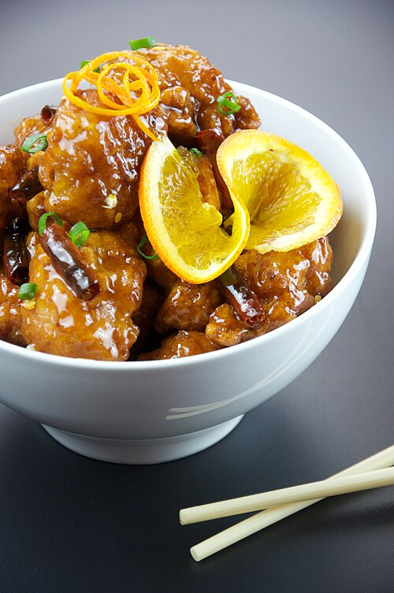

image doesn't accuratly represent what end product looks like
Cheese Glazed Chicken
Intro
a recipe created... I think by my grandmother? she's the only one who knows how to make it perfectly so I assume it's hers anyway. It's truely delicioiuse, this is a rreal recipe unlike the other one so I don't have any notes to share
from my mother, AAAAAAAAAAAAAAAAAAAAAA
| Ingrediant |
amount |
| Skinned Chicken Breasts |
6 pieces |
| Flour |
1-2 T |
| Paprika |
1 tsp |
| Salt |
1 tsp |
| Butter |
2T |
| oil |
1T |
| Sherry |
1/4c |
| Cornstarch |
1 tsp |
| Light Cream |
3/4 c |
| White Wine |
1/3 c |
| Lemon Juice |
1 T |
| Swiss Cheese |
1/2 C |
Instructions
- Place chicken breasts in plastic bag with flour, paprika, and salt. Shake until coated
- Brown the pieces of chicken with butter and oil over moderate heat
- Add sherrt and cook untill the chicken is tender, about 20-30 minutes
- before making the sauce, move the chicken to a platter
- Blend the cornstarch with light cream. Stir into pan droppings and continue to stir until sauce thickens
- add the white wine and lemon juice, then heat for a few more minutes
-
- sprinkle on the cheese and then let sit for 5 min
- serve